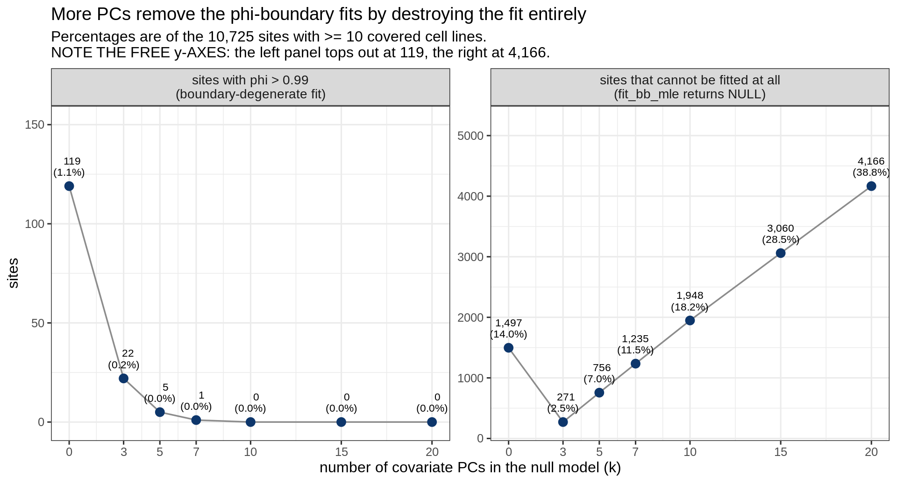
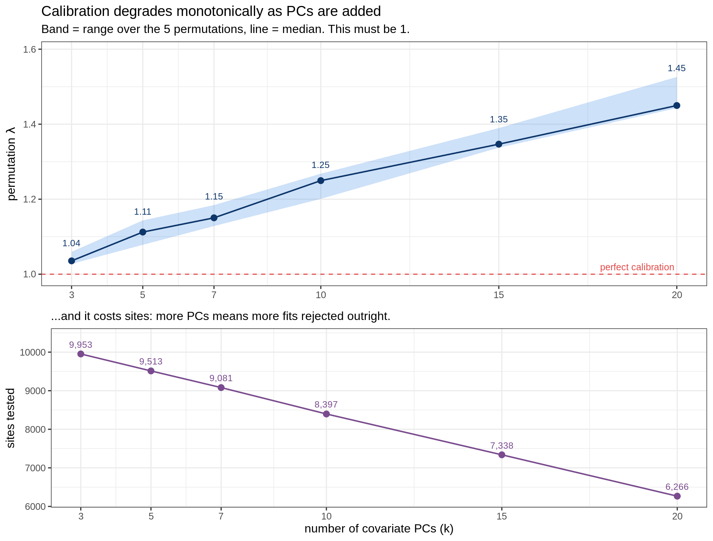
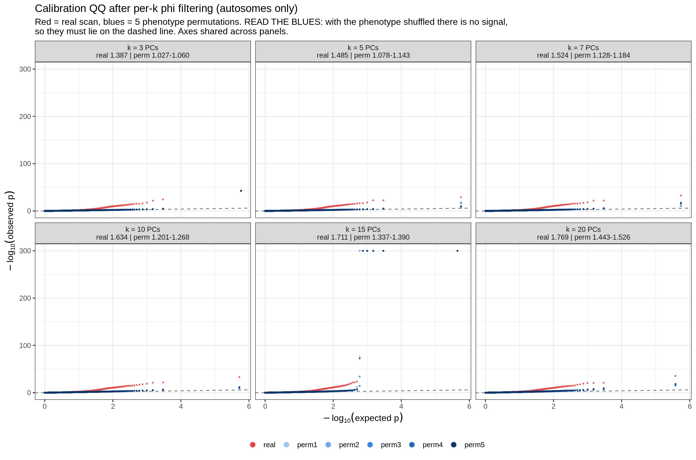
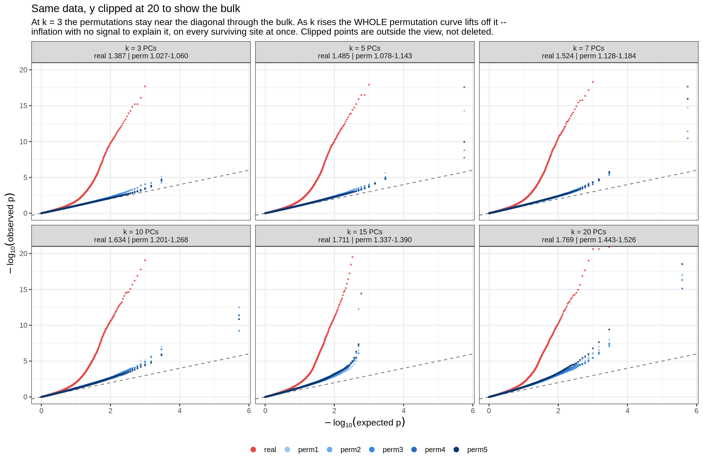
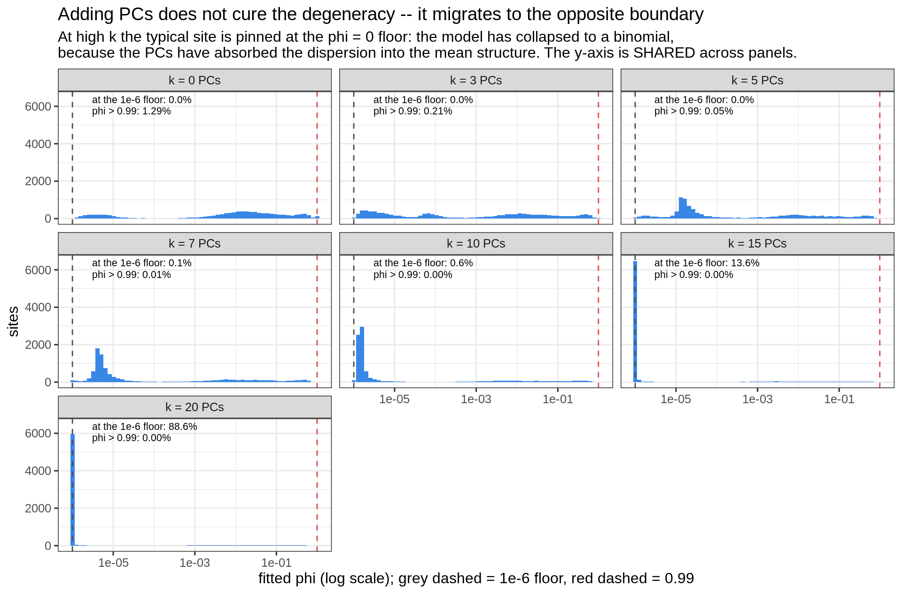

Last updated: 2026-09-01
Checks: 6 1
Knit directory: pumseq/
This reproducible R Markdown analysis was created with workflowr (version 1.7.0). The Checks tab describes the reproducibility checks that were applied when the results were created. The Past versions tab lists the development history.
The R Markdown file has unstaged changes. To know which version of
the R Markdown file created these results, you’ll want to first commit
it to the Git repo. If you’re still working on the analysis, you can
ignore this warning. When you’re finished, you can run
wflow_publish to commit the R Markdown file and build the
HTML.
Great job! The global environment was empty. Objects defined in the global environment can affect the analysis in your R Markdown file in unknown ways. For reproduciblity it’s best to always run the code in an empty environment.
The command set.seed(20260202) was run prior to running
the code in the R Markdown file. Setting a seed ensures that any results
that rely on randomness, e.g. subsampling or permutations, are
reproducible.
Great job! Recording the operating system, R version, and package versions is critical for reproducibility.
Nice! There were no cached chunks for this analysis, so you can be confident that you successfully produced the results during this run.
Great job! Using relative paths to the files within your workflowr project makes it easier to run your code on other machines.
Great! You are using Git for version control. Tracking code development and connecting the code version to the results is critical for reproducibility.
The results in this page were generated with repository version 8746acd. See the Past versions tab to see a history of the changes made to the R Markdown and HTML files.
Note that you need to be careful to ensure that all relevant files for
the analysis have been committed to Git prior to generating the results
(you can use wflow_publish or
wflow_git_commit). workflowr only checks the R Markdown
file, but you know if there are other scripts or data files that it
depends on. Below is the status of the Git repository when the results
were generated:
Ignored files:
Ignored: analysis/qtl_mapping_summary_cache/
Unstaged changes:
Modified: analysis/qtl_mapping_betabinomial_npcs_tradeoff.Rmd
Modified: analysis/qtl_mapping_betabinomial_problematic_diagnosis.Rmd
Note that any generated files, e.g. HTML, png, CSS, etc., are not included in this status report because it is ok for generated content to have uncommitted changes.
These are the previous versions of the repository in which changes were
made to the R Markdown
(analysis/qtl_mapping_betabinomial_npcs_tradeoff.Rmd) and
HTML (docs/qtl_mapping_betabinomial_npcs_tradeoff.html)
files. If you’ve configured a remote Git repository (see
?wflow_git_remote), click on the hyperlinks in the table
below to view the files as they were in that past version.
| File | Version | Author | Date | Message |
|---|---|---|---|---|
| Rmd | 27a3e46 | XSun | 2026-08-29 | update |
| html | 27a3e46 | XSun | 2026-08-29 | update |
suppressMessages({ library(data.table); library(ggplot2) })
knitr::opts_chunk$set(echo = TRUE, warning = FALSE, message = FALSE,
fig.align = "center", fig.width = 10)
PSI <- "/project/xinhe/xsun/pumseq/pumseq_processed/psi_qtl"
D <- file.path(PSI, "qtl_betabinomial/phi_vs_npcs")
G <- file.path(PSI, "qtl_betabinomial/goodness_of_fit")
FIG <- file.path(PSI, "qtl_betabinomial/figures_npcs")
DIAG <- file.path(PSI, "qtl_betabinomial/diagnostic_figures")
SUF <- "_auto_noUCcalled" # the autosome-only sweep (chr1-22)
# sid contains a space ("3 37277733"), so the separator must be given explicitly
fit <- fread(file.path(D, paste0("phi_by_npcs", SUF, ".txt.gz")), sep = "\t")
ov <- fread(file.path(D, paste0("phi_set_overlap", SUF, ".txt")), sep = "\t")
stab <- fread(file.path(D, paste0("phi_stability_kept_sites", SUF, ".txt")), sep = "\t")
info <- fread(file.path(D, paste0("runinfo", SUF, ".txt")), sep = "\t")
gv <- function(k) info[parameter == k]$value
KS <- c(3, 5, 7, 10, 15, 20) # the k values with a calibration run
# per-k iterated phi exclusion list. readLines, not fread: sid contains a space.
# k = 3 keeps the untagged name for back-compat inside 18.phi_filter_iteration.R.
list_for <- function(k) file.path(G, sprintf("phi_filter_dropped_sites%s%s.txt", SUF,
if (k == 3) "" else sprintf("_pc%d", k)))
nexcl <- vapply(KS, function(k) {
f <- list_for(k)
if (!file.exists(f)) return(NA_integer_)
length(setdiff(trimws(readLines(f)), c("", "sid")))
}, integer(1))
names(nexcl) <- KS
iter3 <- fread(file.path(G, paste0("phi_filter_iteration_history", SUF, ".txt")), sep = "\t")
# calibration: each k on its OWN phi-filtered phenotype
lam <- fread(file.path(FIG, "lambda_by_npcs_auto_filtered.tsv"), sep = "\t")
qqd <- fread(file.path(FIG, "qq_thinned_filtered.tsv.gz"), sep = "\t")
cal <- merge(lam[dataset != "real", .(perm_lo = min(lambda), perm_hi = max(lambda),
perm_mid = median(lambda),
worst_perm_tail = max(max_nlp)), by = npcs],
lam[dataset == "real", .(npcs, real_lambda = lambda,
real_tail = max_nlp, sites = n_sites,
n_pvalues = n_pvalues)],
by = "npcs")[order(npcs)]
cal[, phi_excluded := nexcl[as.character(npcs)]]
ORD <- c("real", paste0("perm", 1:5))
COLS <- c(real = "#e34948", perm1 = "#9ec5f4", perm2 = "#6da7ec",
perm3 = "#3987e5", perm4 = "#256abf", perm5 = "#0d366b")
NTOT <- fit[npcs == 3, .N] # sites with >=10 covered cell lines
PHI_CUT <- 0.99
PHI_EPS <- 1e-6 # the numerical floor inside fit_bb_mleEverything on this page is restricted to chr1–22, with the covariate PCs recomputed on chr1–22 only. Phenotype fold5_union_auto_noUCcalled (10,738 sites × 50 cell lines) — U/C-variant sites already excluded.
φ is the beta-binomial’s overdispersion parameter. Here it is the intracluster correlation,
\[\varphi = \frac{1}{a + b + 1}, \qquad \mathrm{Var}[y] = n\,\mu(1-\mu)\bigl[1 + (n-1)\varphi\bigr]\]
so it is bounded to (0, 1) by construction. φ → 1 means
a + b → 0, where the beta prior collapses onto point masses
at 0 and 1 — the model asserting that every cell line’s true
rate is exactly 0 or exactly 1. A fit that lands there has not really
been fitted, and any LRT computed from it is computed from a boundary
solution.
This is what the pU-QTL calibration work traced its remaining miscalibration to: every site still returning an extreme p-value under permutation had φ pinned above 0.99, while only a fraction of a percent of all sites do — see the filtering strategy. The scan therefore excludes those sites.
But the null model is
\[\mathrm{logit}(\mu_i) = \beta_0 + \beta_1 \mathrm{PC1} + \dots + \beta_k \mathrm{PC}k\]
so k enters the fit directly. More PCs give \(\mu_i\) more freedom to track each cell line, so scatter that φ currently absorbs could instead be explained by the mean structure. That raises the question this page answers: how does the φ problem behave across k, and which k should the scan use?
Window size does not enter. φ comes from the null fit, which contains no genotype at all; the window only decides which cis-SNPs are tested afterwards. Every site’s null fit is bit-for-bit identical at 5 kb and at 100 kb.
Null fits only — no genotype, so this is cheap (all seven values of k in under a minute). 13 sites have fewer than 10 covered cell lines and are unfittable at any k; they are excluded throughout, leaving 10,725 sites, constant across k.
knitr::kable(ov[order(npcs), .(
`k (PCs)` = npcs,
`total sites` = format(NTOT, big.mark = ","),
`fittable` = format(n_fitted, big.mark = ","),
`unfittable` = format(n_failed, big.mark = ","),
`phi > 0.99` = n_flagged,
`UNUSABLE (unfittable + phi>0.99)` = format(n_unusable, big.mark = ","),
`unusable %` = sprintf("%.1f%%", 100 * n_unusable / NTOT))],
caption = "'unfittable' means fit_bb_mle() returned NULL -- the fit was attempted and rejected -- NOT missing data; cell lines with zero depth are dropped before fitting. A site is equally lost to the scan whether it is unfittable or phi-degenerate, so the UNUSABLE column is the one to read.")| k (PCs) | total sites | fittable | unfittable | phi > 0.99 | UNUSABLE (unfittable + phi>0.99) | unusable % |
|---|---|---|---|---|---|---|
| 0 | 10,725 | 9,228 | 1,497 | 119 | 1,616 | 15.1% |
| 3 | 10,725 | 10,454 | 271 | 22 | 293 | 2.7% |
| 5 | 10,725 | 9,969 | 756 | 5 | 761 | 7.1% |
| 7 | 10,725 | 9,490 | 1,235 | 1 | 1,236 | 11.5% |
| 10 | 10,725 | 8,777 | 1,948 | 0 | 1,948 | 18.2% |
| 15 | 10,725 | 7,665 | 3,060 | 0 | 3,060 | 28.5% |
| 20 | 10,725 | 6,559 | 4,166 | 0 | 4,166 | 38.8% |
m <- rbindlist(list(
ov[, .(npcs, quantity = "sites with phi > 0.99\n(boundary-degenerate fit)", n = n_flagged)],
ov[, .(npcs, quantity = "sites that cannot be fitted at all\n(fit_bb_mle returns NULL)", n = n_failed)]))
m[, quantity := factor(quantity, levels = unique(quantity))]
ggplot(m, aes(npcs, n)) +
geom_line(colour = "grey55", linewidth = 0.6) +
geom_point(colour = "#0d366b", size = 3) +
geom_text(aes(label = sprintf("%s\n(%.1f%%)", format(n, big.mark = ","), 100 * n / NTOT)),
vjust = -0.55, size = 3.0, lineheight = 0.9) +
scale_x_continuous(breaks = sort(unique(m$npcs))) +
scale_y_continuous(expand = expansion(mult = c(0.08, 0.34))) +
facet_wrap(~ quantity, nrow = 1, scales = "free_y") +
labs(x = "number of covariate PCs in the null model (k)", y = "sites",
title = "More PCs remove the phi-boundary fits by destroying the fit entirely",
subtitle = sprintf("Percentages are of the %s sites with >= %s covered cell lines.\nNOTE THE FREE y-AXES: the left panel tops out at %d, the right at %s.",
format(NTOT, big.mark = ","), gv("min_cell_lines"),
max(ov$n_flagged), format(max(ov$n_failed), big.mark = ","))) +
theme_bw(base_size = 12) + theme(strip.text = element_text(size = 10.5))
| Version | Author | Date |
|---|---|---|
| 27a3e46 | XSun | 2026-08-29 |
The φ > 0.99 count falls to zero as k rises — but not because those sites became well-behaved. They stop producing a fit at all. Unfittable sites go from 271 at k = 3 to 4,166 at k = 20, so the total unusable count is a U-shape with its minimum at k = 3 — the setting already in use. The mechanism is sample size: there are 50 cell lines, so k = 20 means estimating 22 parameters from 50 observations.
A zero in the φ > 0.99 column is therefore not good news, and it is not the whole story either — §4 shows the degeneracy reappearing at the opposite end of φ’s range.
Each k here gets its own exclusion list: φ > 0.99 iterated to a fixed point at that k, with the PCs recomputed each round, then the phenotype rebuilt and the PCs recomputed again on what remains. So the comparison is not confounded by a list derived at some other k.
knitr::kable(data.table(`k (PCs)` = KS, `sites excluded by the phi filter at this k` = as.integer(nexcl)),
caption = "The filter is a genuine intervention only at low k. At k >= 10 it removes nothing -- those sites have already been lost to fit failure rather than cured, so the k >= 10 panels below are NOT 'cleaned up' versions.")| k (PCs) | sites excluded by the phi filter at this k |
|---|---|
| 3 | 33 |
| 5 | 6 |
| 7 | 1 |
| 10 | 0 |
| 15 | 0 |
| 20 | 0 |
Read the permutation λ. Shuffling the phenotype destroys any genotype–phenotype relationship, so permutation λ must be 1 whatever k is. Real-data λ cannot settle the question, because it cannot separate “more signal” from “more inflation”.
# join the fit-level counts (from the null-only sweep) onto the calibration
# results so one table carries the whole picture per k.
ct <- merge(cal, ov[, .(npcs, n_fitted, n_failed)], by = "npcs", all.x = TRUE)
# problematic sites AFTER that k's own phi filter, i.e. from the same filtered
# calibration run the lambda columns come from -- not the unfiltered tree.
ct[, problematic := vapply(npcs, function(k) {
fp <- file.path(DIAG, sprintf("pathological_sites_w5kb_pc%d_auto_noUCcalled_noPhi_pc%d.txt", k, k))
if (file.exists(fp)) max(0L, length(readLines(fp)) - 1L) else NA_integer_
}, integer(1))]
knitr::kable(ct[order(npcs), .(
`k (PCs)` = npcs,
`total sites` = format(NTOT, big.mark = ","),
`fittable` = format(n_fitted, big.mark = ","),
`unfittable` = format(n_failed, big.mark = ","),
`phi excluded` = phi_excluded,
`sites tested` = format(sites, big.mark = ","),
`p-values` = format(n_pvalues, big.mark = ","),
`real lambda` = round(real_lambda, 3),
`permutation lambda` = sprintf("%.3f - %.3f", perm_lo, perm_hi),
`problematic (post-filter)` = problematic,
`real tail` = round(real_tail, 1),
`worst permuted tail` = round(worst_perm_tail, 1))],
caption = "One row per k. 'total sites' and 'fittable' are from the null-only fits (section 2); 'sites tested' is lower again because a site also needs a cis-SNP at MAF >= 0.05 within +/-5 kb. 'problematic (post-filter)' = sites still extreme under permutation AFTER that k's phi filter. NOTE this is not comparable across k as a measure of filter quality: at k = 3 the filter removes 33 sites and clears all 9 that were problematic beforehand, leaving 2 NEW ones created by recomputing the PCs; at k >= 10 it removes nothing, so the column is simply the unfiltered count. Real scan plus 5 phenotype permutations at each k, chr1-22.")| k (PCs) | total sites | fittable | unfittable | phi excluded | sites tested | p-values | real lambda | permutation lambda | problematic (post-filter) | real tail | worst permuted tail |
|---|---|---|---|---|---|---|---|---|---|---|---|
| 3 | 10,725 | 10,454 | 271 | 33 | 9,953 | 289,843 | 1.387 | 1.027 - 1.060 | 2 | 43.5 | 42.5 |
| 5 | 10,725 | 9,969 | 756 | 6 | 9,513 | 283,226 | 1.485 | 1.078 - 1.143 | 0 | 29.1 | 17.6 |
| 7 | 10,725 | 9,490 | 1,235 | 1 | 9,081 | 273,936 | 1.524 | 1.128 - 1.184 | 0 | 32.6 | 17.7 |
| 10 | 10,725 | 8,777 | 1,948 | 0 | 8,397 | 259,210 | 1.634 | 1.201 - 1.268 | 1 | 33.0 | 12.5 |
| 15 | 10,725 | 7,665 | 3,060 | 0 | 7,338 | 223,117 | 1.711 | 1.337 - 1.390 | 3 | 300.0 | 300.0 |
| 20 | 10,725 | 6,559 | 4,166 | 0 | 6,266 | 190,599 | 1.769 | 1.443 - 1.526 | 7 | 35.4 | 18.5 |
g1 <- ggplot(cal, aes(npcs)) +
geom_hline(yintercept = 1, linetype = "dashed", colour = "#e34948") +
annotate("text", x = max(cal$npcs), y = 1, label = "perfect calibration ",
hjust = 1, vjust = -0.6, colour = "#e34948", size = 3.3) +
geom_ribbon(aes(ymin = perm_lo, ymax = perm_hi), fill = "#3987e5", alpha = 0.25) +
geom_line(aes(y = perm_mid), colour = "#0d366b", linewidth = 0.7) +
geom_point(aes(y = perm_mid), colour = "#0d366b", size = 2.6) +
geom_text(aes(y = perm_hi, label = sprintf("%.2f", perm_mid)), vjust = -0.9,
size = 3.2, colour = "#0d366b") +
scale_x_continuous(breaks = cal$npcs) +
scale_y_continuous(expand = expansion(mult = c(0.06, 0.18))) +
labs(x = NULL, y = expression(permutation~lambda),
title = "Calibration degrades monotonically as PCs are added",
subtitle = "Band = range over the 5 permutations, line = median. This must be 1.") +
theme_bw(base_size = 12)
g2 <- ggplot(cal, aes(npcs, sites)) +
geom_line(colour = "#7a4b8f", linewidth = 0.7) +
geom_point(colour = "#7a4b8f", size = 2.6) +
geom_text(aes(label = format(sites, big.mark = ",")), vjust = -1.0, size = 3.2,
colour = "#7a4b8f") +
scale_x_continuous(breaks = cal$npcs) +
scale_y_continuous(expand = expansion(mult = c(0.08, 0.18))) +
labs(x = "number of covariate PCs (k)", y = "sites tested",
subtitle = "...and it costs sites: more PCs means more fits rejected outright.") +
theme_bw(base_size = 12)
gridExtra::grid.arrange(g1, g2, ncol = 1, heights = c(1.3, 1))
| Version | Author | Date |
|---|---|---|
| 27a3e46 | XSun | 2026-08-29 |
Permutation λ rises from 1.027-1.060 at k = 3 to 1.443-1.526 at k = 20, monotonically and with no local optimum — k = 5 is already worse than k = 3, so there is no headroom to buy. No k on this grid beats the setting in use.
q <- copy(qqd)[npcs %in% KS]
q[, dataset := factor(dataset, levels = ORD)]
sub <- cal[, .(npcs, lab = sprintf("k = %d PCs\nreal %.3f | perm %.3f-%.3f",
npcs, real_lambda, perm_lo, perm_hi))]
q <- merge(q, sub, by = "npcs")
q[, panel := factor(lab, levels = sub[order(npcs)]$lab)]
ggplot(q, aes(expected, observed, colour = dataset)) +
geom_abline(slope = 1, intercept = 0, linetype = "dashed", colour = "grey45") +
geom_point(size = 0.5, alpha = 0.8) +
scale_colour_manual(values = COLS, name = NULL) +
guides(colour = guide_legend(override.aes = list(size = 2.8, alpha = 1), nrow = 1)) +
facet_wrap(~ panel, nrow = 2) +
labs(x = expression(-log[10]("expected p")), y = expression(-log[10]("observed p")),
title = "Calibration QQ after per-k phi filtering (autosomes only)",
subtitle = paste("Red = real scan, blues = 5 phenotype permutations.",
"READ THE BLUES: with the phenotype shuffled there is no signal,",
"\nso they must lie on the dashed line. Axes shared across panels.")) +
theme_bw(base_size = 12) + theme(legend.position = "bottom")
| Version | Author | Date |
|---|---|---|
| 27a3e46 | XSun | 2026-08-29 |
YMAX <- 20
ggplot(q, aes(expected, observed, colour = dataset)) +
geom_abline(slope = 1, intercept = 0, linetype = "dashed", colour = "grey45") +
geom_point(size = 0.5, alpha = 0.8) +
scale_colour_manual(values = COLS, name = NULL) +
guides(colour = guide_legend(override.aes = list(size = 2.8, alpha = 1), nrow = 1)) +
facet_wrap(~ panel, nrow = 2) +
coord_cartesian(ylim = c(0, YMAX)) +
labs(x = expression(-log[10]("expected p")), y = expression(-log[10]("observed p")),
title = sprintf("Same data, y clipped at %d to show the bulk", YMAX),
subtitle = paste("At k = 3 the permutations stay near the diagonal through the bulk.",
"As k rises the WHOLE permutation curve lifts off it --",
"\ninflation with no signal to explain it, on every surviving site at once.",
"Clipped points are outside the view, not deleted.")) +
theme_bw(base_size = 12) + theme(legend.position = "bottom")
| Version | Author | Date |
|---|---|---|
| 27a3e46 | XSun | 2026-08-29 |
Why high k can look better and is not. The real-data QQ tail height is erratic across k — 43 / 29 / 33 / 33 / 300 / 35 for k = 3 / 5 / 7 / 10 / 15 / 20 — because it depends on whether a given k happens to leave its worst sites fittable. At k = 15 every dataset, including all five permutations, hits the −log₁₀p = 300 numerical clamp. So tail height is not a usable criterion for choosing k. Permutation λ is smooth and monotone over the same range, and it is the one to use.
A handful of catastrophic sites can be identified and excluded. Diffuse inflation spread over every surviving site cannot be, and it corrupts every FDR threshold.
One bookkeeping note so the counts reconcile: the §2 sweep does a single pass at each k, while the exclusion lists in this section are iterated. At k = 3 that is 22 sites in round 0 and 33 after 5 rounds that flagged anything, because removing sites changes the PCs, which changes every remaining fit.
Both ends of φ’s range are degenerate: φ → 1 collapses the beta prior
onto point masses at 0 and 1, and φ → 0 reduces the model to a plain
binomial. fit_bb_mle floors φ at PHI_EPS =
1e-6 to keep the likelihood finite.
Watching the whole distribution, rather than just the upper tail, shows that adding PCs does not remove the degeneracy — it migrates to the other boundary:
d <- fit[ok == TRUE]
d[, kf := factor(npcs, levels = sort(unique(npcs)),
labels = paste0("k = ", sort(unique(npcs)), " PCs"))]
lab <- d[, .(txt = sprintf("at the 1e-6 floor: %.1f%%\nphi > 0.99: %.2f%%",
100 * mean(phi <= 1.01 * PHI_EPS), 100 * mean(phi > PHI_CUT))),
by = kf]
ggplot(d, aes(pmax(phi, PHI_EPS))) +
geom_histogram(bins = 60, fill = "#3987e5", colour = NA) +
geom_vline(xintercept = PHI_CUT, linetype = "dashed", colour = "#e34948") +
geom_vline(xintercept = PHI_EPS, linetype = "dashed", colour = "grey30") +
geom_text(data = lab, aes(x = 3e-6, y = Inf, label = txt), hjust = 0, vjust = 1.25,
size = 2.8, lineheight = 0.95, inherit.aes = FALSE) +
scale_x_log10() + facet_wrap(~ kf, ncol = 3) +
labs(x = "fitted phi (log scale); grey dashed = 1e-6 floor, red dashed = 0.99",
y = "sites",
title = "Adding PCs does not cure the degeneracy -- it migrates to the opposite boundary",
subtitle = paste("At high k the typical site is pinned at the phi = 0 floor: the model has collapsed to a binomial,",
"\nbecause the PCs have absorbed the dispersion into the mean structure.",
"The y-axis is SHARED across panels.")) +
theme_bw(base_size = 12)
| Version | Author | Date |
|---|---|---|
| 27a3e46 | XSun | 2026-08-29 |
knitr::kable(d[, .(
`sites fitted` = format(.N, big.mark = ","),
`median phi` = signif(median(phi), 3),
`at the phi=0 floor (1e-6)` = sprintf("%.1f%%", 100 * mean(phi <= 1.01 * PHI_EPS)),
`phi > 0.99` = sprintf("%.2f%%", 100 * mean(phi > PHI_CUT))),
by = .(`k (PCs)` = npcs)][order(`k (PCs)`)],
caption = "Both boundaries matter, which is why 'phi > 0.99 = 0' at high k is not evidence of a healthier fit.")| k (PCs) | sites fitted | median phi | at the phi=0 floor (1e-6) | phi > 0.99 |
|---|---|---|---|---|
| 0 | 9,228 | 1.40e-02 | 0.0% | 1.29% |
| 3 | 10,454 | 4.34e-04 | 0.0% | 0.21% |
| 5 | 9,969 | 3.23e-05 | 0.0% | 0.05% |
| 7 | 9,490 | 6.50e-06 | 0.1% | 0.01% |
| 10 | 8,777 | 1.50e-06 | 0.6% | 0.00% |
| 15 | 7,665 | 1.00e-06 | 13.6% | 0.00% |
| 20 | 6,559 | 1.00e-06 | 88.6% | 0.00% |
At k = 20, 88.6% of the sites that do fit sit on the φ = 0 floor. Combined with the 38.8% that fail outright, almost nothing at k = 20 is being estimated properly.
This also changes what the eventual fix should look like: the
guard belongs inside fit_bb_mle, and it must be
two-sided, covering φ → 0 as well as φ → 1.
betabin_lib.R already rejects boundary values for μ and for
the coefficients (MAX_ABS_COEF) — φ was simply omitted from
that set, and an exclusion list derived at one k is a stopgap for
something that should be caught at fit time at every k.
The exclusion list could be well-behaved while every retained site’s φ moves, which would matter for the LRT regardless of the filter. It does move:
knitr::kable(stab[, .(pair, correlation = round(cor, 4),
`max |difference|` = round(max_abs_diff, 4),
`frac moving > 0.01` = sprintf("%.1f%%", 100 * frac_moving_gt_0.01))],
caption = "phi among RETAINED sites, between pairs of k. Compare with the iterated filter at fixed k, where recomputing the SAME number of PCs on a changed site set leaves phi almost fixed (correlation 0.999+).")| pair | correlation | max |difference| | frac moving > 0.01 |
|---|---|---|---|
| k0 vs k3 | 0.9417 | 1.0000 | 34.0% |
| k0 vs k5 | 0.8705 | 1.0000 | 42.1% |
| k0 vs k7 | 0.8476 | 1.0000 | 46.7% |
| k0 vs k10 | 0.8263 | 1.0000 | 48.6% |
| k0 vs k15 | 0.7219 | 1.0000 | 47.6% |
| k0 vs k20 | 0.6875 | 1.0000 | 46.7% |
| k3 vs k5 | 0.9269 | 0.7835 | 15.9% |
| k3 vs k7 | 0.9015 | 0.8010 | 22.8% |
| k3 vs k10 | 0.8612 | 0.7000 | 27.1% |
| k3 vs k15 | 0.7808 | 0.7244 | 27.9% |
| k3 vs k20 | 0.7221 | 0.6974 | 27.3% |
| k5 vs k7 | 0.9581 | 0.8257 | 11.6% |
| k5 vs k10 | 0.9015 | 0.6600 | 18.2% |
| k5 vs k15 | 0.8228 | 0.5695 | 20.0% |
| k5 vs k20 | 0.7468 | 0.6741 | 20.0% |
| k7 vs k10 | 0.9319 | 0.6656 | 12.1% |
| k7 vs k15 | 0.8461 | 0.6656 | 15.4% |
| k7 vs k20 | 0.7648 | 0.6369 | 15.6% |
| k10 vs k15 | 0.9120 | 0.5443 | 9.1% |
| k10 vs k20 | 0.8272 | 0.5652 | 10.4% |
| k15 vs k20 | 0.9001 | 0.5030 | 5.1% |
Changing the number of PCs is a much larger perturbation than recomputing the same number on a slightly different site set. A scan at a different k is a genuinely different model, not a small perturbation of this one — which is why the exclusion list has to be re-derived per k, as it was in §3, and why it should not be carried across configs.
Keep k = 3. Three independent lines of evidence agree:
The φ > 0.99 exclusion list is valid at k = 3 and
should be re-derived if k ever changes. The durable fix is a two-sided φ
guard inside fit_bb_mle.
fit_bb_mle returned NULL;
its four exits (no starting values, non-convergence, μ boundary guard,
coefficient guard) are not distinguished. Overfitting makes the μ and
coefficient guards likely at high k, but non-convergence would look
identical here. Stated as inference, not measurement.aod’s φ and VGAM’s rho, not a
precision parameter on (0, ∞).Related: the current strategy and its calibration · the goodness-of-fit attempts
sessionInfo()R version 4.2.0 (2022-04-22)
Platform: x86_64-pc-linux-gnu (64-bit)
Running under: CentOS Linux 8
Matrix products: default
BLAS/LAPACK: /software/openblas-0.3.13-el8-x86_64/lib/libopenblas_skylakexp-r0.3.13.so
locale:
[1] C
attached base packages:
[1] stats graphics grDevices utils datasets methods base
other attached packages:
[1] ggplot2_3.4.2 data.table_1.14.4 workflowr_1.7.0
loaded via a namespace (and not attached):
[1] tidyselect_1.2.0 xfun_0.38 bslib_0.3.1 colorspace_2.0-3
[5] vctrs_0.6.1 generics_0.1.3 htmltools_0.5.7 yaml_2.3.5
[9] utf8_1.2.2 rlang_1.1.2 R.oo_1.24.0 jquerylib_0.1.4
[13] later_1.3.0 pillar_1.9.0 glue_1.6.2 withr_2.5.0
[17] R.utils_2.11.0 lifecycle_1.0.4 stringr_1.5.0 munsell_0.5.0
[21] gtable_0.3.0 R.methodsS3_1.8.1 evaluate_0.15 labeling_0.4.2
[25] knitr_1.42 callr_3.7.0 fastmap_1.1.0 httpuv_1.6.5
[29] ps_1.7.0 fansi_1.0.3 highr_0.9 Rcpp_1.0.11
[33] promises_1.2.0.1 scales_1.2.0 jsonlite_1.8.7 farver_2.1.0
[37] fs_1.5.2 gridExtra_2.3 digest_0.6.29 stringi_1.7.6
[41] processx_3.5.3 dplyr_1.1.2 getPass_0.2-2 rprojroot_2.0.3
[45] grid_4.2.0 cli_3.6.2 tools_4.2.0 magrittr_2.0.3
[49] sass_0.4.1 tibble_3.2.1 whisker_0.4 pkgconfig_2.0.3
[53] rmarkdown_2.21 httr_1.4.5 rstudioapi_0.14 R6_2.5.1
[57] git2r_0.30.1 compiler_4.2.0